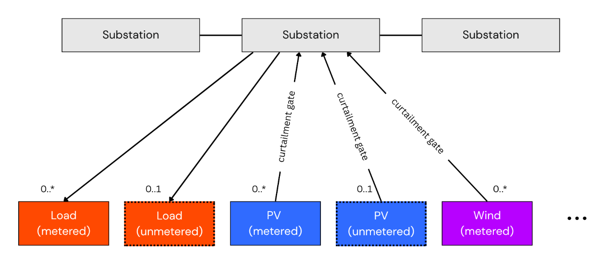

Net-Demand Disaggregation — Approach & v2 Research Roadmap
Status: 🔬 v2 research. This page is the canonical home for the v2 disaggregation arc: recovering latent demand and unmetered DER generation from net substation power, across the whole NGED network. It covers the plan and architecture; the methods it builds on are explained in the techniques pages — Differentiable Physics for the forward models and Convex Optimisation for the convex machinery. The sibling v2 arc — abnormal running arrangements and latent-demand recovery under switching — has its own canonical doc, Switching events & latent demand. How progress is measured lives in Evaluating disaggregation. This work is roadmap v2.0; it builds on the metered-generator capacity estimates from v0.7. The Python in this document is illustrative sketch code, not the implementation. See the roadmap index for status conventions.
This is the deep-dive behind two of the "innovative and unique" capabilities highlighted in the Milestone 1 report: natively handling unmetered generation and apparent-power (MVA) metering. (The third — dynamically-changing effective capacity of metered generators — is the v0.7 deliverable, planned in Capacity estimation; v2 builds on its output.)
The problem: net power is not demand
What a substation meter records is not demand. It is net power — the sum of true underlying demand minus behind-the-meter generation (rooftop PV, small wind, battery discharge) plus any unregistered or poorly-metered embedded generation. The "latent, unobserved demand" is the load that would be seen at the meter if all distributed energy resources (DERs) were removed. Recovering that latent signal is the disaggregation problem.
Compounding this, each primary substation spends roughly 10% of its operating time in an abnormal running arrangement (ARA) — a state in which switching events reroute a block of load from its normal parent substation to a neighbour, so the metered signal is structurally different from what it would be under normal topology. NGED requires forecasts expressed as if the network is always in its normal running arrangement — the latent demand under nominal topology, which is precisely the quantity network planners need. The full problem statement lives in the background docs (switching events, NGED's network); forecast building blocks covers how the "normal running arrangement" target is delivered.
The engine below attacks this by inversion through a differentiable forward model: model each substation's meter reading as the physical sum of its latent parts, then run the model backwards. The key product is not just the DER estimates but the latent demand signal itself — which can then be used directly as the target for a standard probabilistic forecasting model, free from the confounding effect of DERs.
DER tractability ranking
Disaggregation works best where there is a common observable exogenous driver and homogeneous behaviour across sites — conditions that let errors average out rather than compound. The tractability ranking across DER types is:
| DER type | Tractability | Key reason |
|---|---|---|
| PV | Excellent | Irradiance-driven; panel behaviour is near-identical across sites; errors average out at fleet level |
| Wind | Good | Wind-speed-driven via a learnable power curve; more spatial heterogeneity than PV but still exogenous |
| Heat pumps | Intermediate | Temperature-driven with COP rolloff; heterogeneity partly averages out at substation aggregate level |
| EVs | Poor | No clean exogenous driver; behaviour is synchronised (school-run, cheap-rate charging), so errors compound rather than cancel; synchronised peaks are exactly what matters to the grid |
| Batteries | Very poor | Pure latent control — tariff/market-driven with no physical exogenous signal; two identical batteries sitting next to each other can dispatch in opposite directions simultaneously |
Practical conclusion for v2 scope: disaggregation targets PV (primary), wind (secondary), and heat pumps (worth attempting at substation-aggregate level). For batteries, the right approach is price-driven behavioural-clustering methods — the kind targeted by OCF's NESO "EDGE" project proposal (currently blocked waiting for data, as of June 2026) — rather than physics-based disaggregation. For EVs, honest publication requires wide uncertainty intervals and a clear caveat that the synchronised-peak regime (precisely the regime NGED cares about most) is the hardest case.
The forward model
The substation meter reading is treated as the output of a forward model over the latent parts:
observed_power(t) = latent_demand(t) − pv_generation(t) − wind_generation(t) − battery_net(t) + losses(t)
Each right-hand-side term is modelled explicitly:
latent_demand(t)— what we want: a smooth, weather-driven, time-of-week-structured signal representing the true underlying load.pv_generation(t)— estimated from irradiance (from NWP and/or satellite) via a differentiable physics model of panel conversion efficiency (temperature and spectral correction, clipping at inverter limits). Panel capacity is a latent parameter estimated jointly.wind_generation(t)— estimated from wind speed via a differentiable power curve.battery_net(t)— handled via a state-space component with charge/discharge dynamics. (A later / stretch component — battery disaggregation is a v2 stretch goal in the roadmap.)losses(t)— approximated as a smooth function of load level. (Also a later refinement.)
Metered vs. unmetered DERs
A crucial distinction runs through the whole project: each generation term above is really the sum of a metered and an unmetered part. NGED meters some large DERs directly — utility-scale solar PV farms, large wind farms, grid-scale batteries — while a long tail of small DERs is unmetered behind the substation: domestic rooftop PV, small distributed wind, home batteries (and, strictly, EV chargers and heat pumps on the demand side). Written out in full, the forward model is closer to:
observed = latent_demand
− (pv_metered + pv_unmetered)
− (wind_metered + wind_unmetered)
− (battery_metered + battery_unmetered)
+ losses
We keep the compact equation above for readability, but the model treats the two classes differently:
- Metered DERs are modelled per asset. Because we know the site exists and have its own
generation meter, we can fit explicit, physically-interpretable parameters for it — for a
metered PV farm, that single site's panel tilt, azimuth and effective capacity (see
DifferentiableSolarPlant). This is the v0.7 deliverable — see Capacity estimation — and v2 consumes its output: verified, accurately-tracked metered assets are what anchor the harder unmetered inference. - Unmetered DER fleets cannot be modelled as a single asset — a primary substation may sit
above hundreds or thousands of rooftops with a mishmash of orientations. These are modelled as
an aggregate fleet node via the physics-informed basis expansion in
UniversalSolarFleetNode. Estimating and disaggregating the unmetered DERs is the harder, v2 goal.
This is also where the project graduates from estimating capacity to directly forecasting power with the physics models (including for MVA-metered sites, below), and where the latent-demand inversion of the forward model is realised in full.
The graph-structured engine
The distribution network is fundamentally a topological graph, and we model it as one. The graph is a data structure: a fixed map of which substations can exchange load with which neighbours, and which sites see which weather. Each substation is reconstructed as the sum of its own differentiable-physics modules (gross demand, metered/unmetered PV, metered/unmetered wind), whose latent parameters — most importantly each module's capacity — are inferred directly from that substation's metered power and the local weather. The components are separable because each has a distinct exogenous driver and temporal signature (PV tracks irradiance, wind tracks wind speed, demand tracks time-of-week and temperature), so each substation's fit can pull them apart locally. The graph carries the structural prior — who can exchange load with whom — and a hard Kirchhoff balance closes the books. This mirrors the schematic in the Milestone 1 report (Fig. 10):

Node definitions
Following the report's schematic, the graph uses the following node types:
- Substation nodes — the measured, net blended power flow at a primary substation (the main target constraint).
- Metered load nodes — demand that NGED meters directly, where such metering exists.
- Gross demand nodes — the underlying, unmetered consumer load, inferred by the model. Implemented as a
BasisLoadNode: a shared MLP learns a small set of universal demand-profile shapes (e.g. residential, commercial, light-industrial) as functions of time-of-day, day-of-week, and temperature; each substation carries a local "style vector" of mixing weights that describes its particular customer mix. The universal basis curves are shared across all substations; only the style vector is site-specific, so the model can distinguish a residential suburb from an industrial estate without re-learning basic human demand patterns from scratch at each site. (Learning the shared shapes is non-convex PyTorch work — but once the dictionary is frozen, fitting a new substation's style vector against it is a small convex problem: cheap onboarding of new substations without retraining, and warm starts for the joint fit. See the fixed-shapes pattern.) - Metered PV / Wind nodes — generators with dedicated, live generation metering.
- Unmetered PV / Wind fleet nodes — aggregated behind-the-meter (BTM) solar and distributed wind, grouped by location, with no direct metering. PV fleets are each implemented as a
UniversalSolarFleetNode; wind fleets get their own analogous node type, with a shared learnable aggregate power curve in place of the orientation-mix bases (a turbine fleet has no tilt/azimuth to mix). - Heat pump nodes (v2 stretch) — heat pump demand exhibits a distinctive J-curve: as temperatures fall, heating demand rises, but aggregate COP also falls, so electricity draw grows super-linearly with cold. This non-linearity cannot be captured by treating temperature as a plain regression feature — it requires an explicit COP-rolloff function. A
HeatPumpNodemodels this: it takes ambient temperature, applies a learned COP curve, and outputs the net electricity demand attributable to heat pumps. Contributes to gross demand at substations with significant residential or commercial heat pump penetration.
Each generation node feeds the substation through a curtailment gate: a separate multiplicative factor, driven by NGED's ANM/curtailment data feed, that represents network-enforced reductions. Keeping curtailment in its own gate (rather than inside the capacity parameter) is what lets the effective-capacity estimate stay a clean measure of physical availability — see Capacity estimation (including the caveat there that the ANM feed is itself imperfect) and Fig. 10.
The fusion mechanism
Spatial weather correlations (e.g. if it is raining at Substation A, the adjacent Unmetered PV
Fleet B is probably cloudy too) are already supplied by the gridded NWP each node consumes.
Where cross-site information genuinely helps the under-determined per-site fit, it enters as
hierarchical parameter sharing: the unmetered-fleet and demand nodes share a small set of
universal basis shapes
(UniversalSolarFleetNode;
BasisLoadNode above), with only a per-site style vector learned locally. Each node's physics
modules compute explicit physical generation, and a hard Kirchhoff balance node then aggregates
the elements:
where the \(\gamma\) terms are the per-asset curtailment gates. The error between predicted and measured substation flow produces a gradient that flows back through the shared and per-site parameters, optimising them and the physical parameter posteriors simultaneously.
To be explicit about a design boundary: we do not currently plan to use message-passing graph neural networks (GNNs) anywhere in this project. The graph does its work as a data structure, and cross-site statistical strength arrives through the shared parameters and the hard flow balance above. We would not completely rule a GNN out towards the very end of the project — if measured residuals ever showed spatial structure that the gridded NWP and hierarchical sharing demonstrably miss — but nothing in the design depends on one. The same graph also underpins switching-event handling, where it is likewise used only as a data structure — see Switching events & latent demand, Part 2.
Unmetered installed capacity grows monotonically
The installed capacity of an unmetered fleet essentially only ever grows, as more households
and businesses fit panels — unlike the effective capacity of a metered generator, which
moves in both directions
with faults and repairs. A monotonic representation is therefore the right prior here. We model
capacity as a cumulative sum of per-week increments, each constrained to be non-negative,
with an L1 (sparsity) penalty pushing most weekly increments to exactly zero — because installs
happen in occasional bursts, not every week. The running total is then non-decreasing by
construction. (This is the representation
UniversalSolarFleetNode
implements; in a convex host the same prior is a hard constraint plus an \(\ell_1\) penalty with
exact zeros.)
Combining the physics with the weather encoder
+-------------------+
| Learnt parameters |
| per site: |
| |
| • PV tilt | +---------------+
| • PV azimuth | <=======> | pvlib-pytorch |----------+
| • AC capacity | +-------+-------+ |
| • DC capacity | ^ |
| • etc. | | v
+-------------------+ | +-------------+
+------+------+ | multi-seq |
| Irradiance | | alignment |
| Temperature | | with axial |---> [ p̂ ]
+------+------+ | attention |
^ +-------------+
+--------------+ +-------------------+ | ^
| Weather data |---->| weather encoder |------+ |
+--------------+ +-------------------+ +------+------+
| History |
+-------------+
- NWP bias is handled by the weather encoder: "the weather model says it's cloudy, but historically this specific pressure pattern at this location means it's actually clear" (feature-level correction).
- Physical constraints are handled by the differentiable physics: "based on the corrected weather, the geometry of the sun and panel dictates \(X\) power" (first-principles baseline).
- Systematic / local anomalies (the "unknown unknowns") are handled by the retrieval / alignment module: "on days that looked exactly like this in the past, the physics model consistently over-predicted the evening ramp-down by 5% because of that one tree on the horizon" (residual correction).
See Learned encoders for the encoder modules themselves, and
pvlib-pytorch for the planned
differentiable PV library in the diagram.
The convex dictionary baseline
Before (and alongside) the full engine, there is a much simpler disaggregator worth building — one that uses no neural networks and no gradient descent at all. The trick: replace learning continuous physics parameters with convex selection from a discrete menu.
Precompute per-unit output curves for a menu of candidate systems, all driven by the actual local weather: a few dozen PV orientations (tilt × azimuth combinations), a few wind-turbine classes, a couple of heat-pump temperature responses. Each menu item is then a known signal — a fixed shape. Model the substation's net demand as an unknown residual demand shape minus an unknown, non-negative, slowly-growing amount of each menu item:
where \(u_k(t)\) is menu item \(k\)'s known per-unit output and \(c_k(t)\) its unknown installed amount. This is linear in the unknowns, hence convex — the fixed-shapes pattern end to end, with every prior available in its exact convex form: a sparsity penalty selects the few menu items genuinely present behind each substation (exact zeros, so the selection is literal); the monotone-growth constraint encodes that fleets don't shrink; and fitting many substations jointly against shared weather sharpens the identification. There is respectable precedent: Wytock & Kolter's contextually supervised source separation did convex energy disaggregation in exactly this spirit.
Hard limits of the convex-only route — stated up front, because they define its role:
- It cannot refine the menu. If reality sits between two menu items, the fit returns a blend; systematic error in the physics curves becomes bias, not something learnable. (The full engine, which learns shapes, can correct this.)
- It cannot do behaviour. EV plugging and battery arbitrage are not weather-shaped dictionary atoms — see the tractability ranking; batteries are already ceded to price-driven methods regardless of estimator.
- No posteriors — the standard limitation of the convex route.
- It cannot beat collinearity. Heat-pump load versus ordinary cold-weather heating: where the data cannot distinguish two stories, a convex model honestly refuses to — which is a feature for trustworthiness, but a ceiling on what it can resolve.
Its role: a transparent early disaggregator, and permanently the baseline on the disaggregation leaderboard — simple, reproducible, and embarrassing to any fancier model that cannot outperform it. The full engine earns its complexity only by beating this.
Apparent-power (MVA) metering
Some substations are metered only in apparent power (MVA), which reports the absolute value of flow and so cannot distinguish import from export — when embedded generation pushes power back into the grid, an MVA trace "bounces" off zero instead of going negative. Because the forward model reconstructs signed demand and generation explicitly, it handles this natively: we compare the measured MVA reading against the magnitude of the reconstructed net flow,
(assuming near-unity power factor). The physics grounds the model so that a sunny-day "bounce" is correctly attributed to reverse power flow from generation, not to a spike in demand. This is one of the two capabilities the Milestone 1 report highlights for this engine — the other being unmetered disaggregation. (Note this reconstruction is intrinsically non-convex — the sign ambiguity means two valleys by construction — so it belongs to the PyTorch side of the tooling rule.)
Two implementation cautions:
- The magnitude loss needs smoothing. \(|x|\) is non-differentiable at zero and its gradient flips sign there — exactly where the bounce lives. Compare against a smoothed magnitude, e.g. \(\sqrt{x^2 + \epsilon}\), and add a temporal-continuity prior on the sign of the reconstructed flow: flow direction persists for hours, it does not flicker half-hour to half-hour.
- The near-unity power-factor assumption is weakest precisely at the bounce. As real power passes through zero, reactive power dominates the measured magnitude, so the MVA trace has a soft floor above zero rather than a clean reflection. Expect the reconstruction to under-fit the bottom of the bounce, and do not let the optimiser explain the floor with phantom demand.
Handling abnormal running arrangements
Abnormal running arrangements (ARAs) — where switching events reroute load between substations, so the metered signal no longer reflects the normal running arrangement — are covered in their own canonical doc: Switching events & latent demand.
In brief: the v0.6 stage detects switching events with unsupervised statistics on the power series; the v2 stages reconstruct the latent demand each substation would have metered under the normal running arrangement, using a time-varying mixture over the neighbourhood graph (optionally type-resolved into demand / PV / wind, each a physics module as in the engine above). Two points matter for consistency with the rest of this document:
- The graph is a data structure — who can exchange load with whom.
- Conservation is a node-level flow balance across a 2–3-way fan-out (a source's loss absorbed by a subset of neighbours whose pickups sum to it), not a pairwise equal-and-opposite transfer.
An earlier sketch proposed a discrete "switching state-space model" over per-feeder load blocks. That formulation is retired: NGED's network is meshed and run radially with movable cut points, so there is no stable, re-identifiable feeder unit to discover and route (see switching-events.md, Part 4). The output — topology-normalised latent demand — remains the NGED-required target variable.
What already exists (prior art)
The component ideas each have precedent, which is important for calibrating the novelty claim.
Behind-the-meter PV and load disaggregation is a mature subfield. There is substantial published work on separating net load into behind-the-meter PV and native demand, including spatiotemporal GNN approaches where nodes are net-load measurements at neighbouring units and message passing encodes spatial correlation. Unsupervised methods that leverage the irradiance–PV correlation without any physical model also exist. "GNN over neighbouring nodes for net-load → PV + load disaggregation" is, by itself, a known approach. Convex disaggregation also has precedent: Wytock & Kolter's contextually supervised source separation is the direct ancestor of the dictionary baseline above.
Physics-informed neural networks for PV generation are established. There is prior work on differentiable physics mapping weather to PV power, and at least one patent on unsupervised solar disaggregation using a physics-based irradiance-to-power model as the inversion constraint.
Switching state-space machinery exists off the shelf. Recurrent switching linear dynamical systems (rSLDS; Linderman, Johnson et al., AISTATS 2017) and explicit-duration variants (RED-SDS) are standard tools for unsupervised segmentation of multivariate time series into discrete latent modes. We considered this machinery for ARA handling but did not adopt it: it presumes a discrete, re-identifiable switching unit (a per-feeder "block") that NGED's meshed, radially-run network with movable cut points does not possess (see switching-events.md, Part 4). Our chosen formulation is the continuous neighbourhood mixture described there.
Topology and switch-state identification has been studied, but overwhelmingly using voltage measurements. NGED does not currently provide us with voltage at primary substation level. And, we have discussed the idea of using voltage with NGED, and there are two deal-breakers for using voltage for topology identification: 1. Voltage often changes as a result of tap-changes on transformers and, more importantly, 2. Those voltage changes as a result of tap-changes could be used to infer topology but ONLY IF we had high-temporal resolution data (on the order of 1 Hz). But we only have half-hourly data, which blurs that info.
Where this work is novel
The novelty lies in the combination and problem framing, not in any single component:
1. Switching events as the primary disaggregation target, not an afterthought. Existing disaggregation literature treats the network topology as fixed and known. The ARA problem — where the topology itself is a latent variable that flips over timescales of minutes to months — has not been addressed in the disaggregation literature. This is not a minor extension; it changes the structure of the inference problem fundamentally.
2. Power conservation as the cross-node inference signal. Prior spatial-disaggregation work uses spatial correlation as a soft prior. Here the graph edges carry a hard physical constraint: rerouted power is conserved across the affected neighbourhood as a node-level flow balance (a source's loss is absorbed by a subset of neighbours whose pickups sum to it). This is a stronger and more principled basis for cross-node inference than learned message passing.
3. Joint estimation of latent demand, DER parameters, and routing state. Existing approaches treat the topology as known, or the DER parameters as known, or the load as known, and estimate one unknown from the others. The joint inference problem — all three unknowns simultaneously, end-to-end differentiable — has not been cleanly tackled at this level of the distribution network.
4. The target variable is operationally defined by the DNO's requirement. Framing the output as "demand under normal running arrangement" is not just a modelling convenience — it is the variable that network operators actually need for planning and forecasting. This operational grounding, combined with the open evaluation protocol (rigorous, reproducible, multi-DNO leaderboards), is the publishable contribution that distinguishes OCF's approach from prior academic work.
5. Application at primary substation resolution with half-hourly data. The bulk of prior work operates at GSP/DNO-region scale (e.g. Sheffield Solar's PV Live) or at individual household level (NILM). The primary substation level — aggregating hundreds of customers, but below the GSP — is the level at which DER invisibility is operationally critical, and it is the level at which NGED's data exists. Systematic, open benchmarking at this resolution does not yet exist.
6. Real-power-only inference — the "no-voltage" constraint as a novelty claim, not just a limitation. As the prior art review notes, existing topology and switch-state identification work relies overwhelmingly on voltage measurements, which NGED does not provide at primary substation level (many primaries lack voltage metering; tap-changers shift voltage independently of load; and half-hourly data smooths over voltage transients). This work therefore demonstrates that the switching inference problem is solvable from real-power balance alone. Framing this as a contrarian design choice — not a regrettable data gap — inverts the standard assumption and is itself a publishable contribution.
Technical architecture summary
| Layer | Component | Role |
|---|---|---|
| Graph | Primary substations as nodes; reconfigurable boundaries as edges (a plain data structure) | Structural prior on which substations can exchange load |
| Forward model | Differentiable physics (irradiance → PV, wind speed → wind power, state-space battery) | Converts latent demand + DER params → predicted meter reading |
| Reconstruction loss | Squared residual, summed over nodes and time | Drives joint inversion of latent demand and DER parameters |
| Cross-site coupling | Hierarchical parameter sharing (shared basis + per-site style vector) + hard Kirchhoff balance | Borrows statistical strength across sites |
| Transparent baseline | Convex dictionary disaggregator | The reproducible floor the engine must beat on the leaderboard |
| ARA handling | Time-varying neighbourhood mixture with node-level flow balance — see switching-events.md | Reconstructs latent demand under the normal running arrangement |
| Output | Latent demand under nominal topology, per substation, per half-hour | Target variable for downstream probabilistic forecasting |
| Forecast layer | XGBoost or neural sequence model on cleaned latent demand | Produces 14-day probabilistic forecasts in NGED-required format |
Long-term vision: GB-wide inverse irradiance mapping
Once the architecture has calibrated, parameter-verified "virtual sensors" across the metered fleet, we can run the inversion trick at scale. Freezing the calibrated asset parameters and running gradient descent backward through the physics modules — from measured generation to the weather inputs — recovers a surface-irradiance estimate (and, for wind, a wind-speed estimate) at each metered site. These point estimates are sparse virtual observations; a spatial interpolation step (e.g. graph-based or geostatistical) then fills in a denser field across Great Britain. The result would be a half-hourly, physics-validated weather product, independent of the NWP, useful as a cross-check for real-time grid balancing. This is a research aspiration well beyond v2, and the density of the recovered field is fundamentally limited by the spatial coverage of the metered fleet.
Evaluating disaggregation
There is no single clean ground truth for disaggregation, so progress is measured with a multi-pronged protocol — see Evaluating disaggregation.